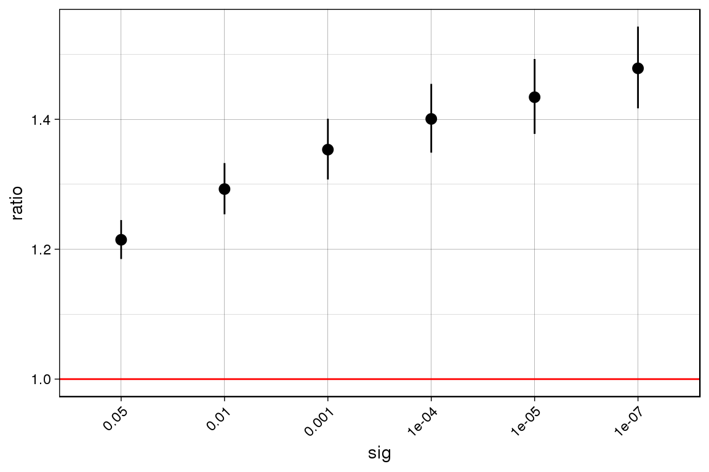
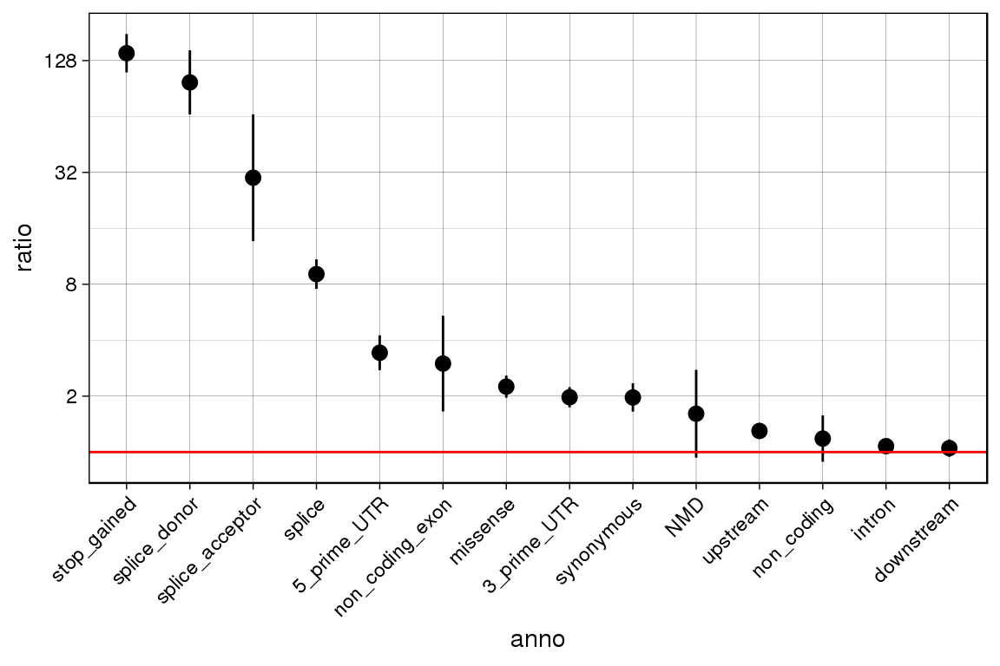

exoutbench_tutorial.Rmd## ── Attaching packages ─────────────────────────────────── tidyverse 1.2.1 ──## ✔ ggplot2 3.1.1 ✔ purrr 0.3.2
## ✔ tibble 2.1.1 ✔ dplyr 0.8.0.1
## ✔ tidyr 0.8.3 ✔ stringr 1.4.0
## ✔ readr 1.3.1 ✔ forcats 0.4.0## ── Conflicts ────────────────────────────────────── tidyverse_conflicts() ──
## ✖ dplyr::filter() masks stats::filter()
## ✖ dplyr::lag() masks stats::lag()ExOutBench is a tool used to benchmark the performance expression outlier calling methods in prioritizing genes whose expression is associated with rare genetic variation. For each function in the package the input is:
outlier.calls) is formatted like this:| SampleName | GeneID | chr | start | end | consdetail |
|---|---|---|---|---|---|
| IndvA | ENSG00000186092 | chr1 | 64904 | 64905 | upstream |
| IndvA | ENSG00000230021 | chr1 | 631495 | 631496 | upstream |
| IndvA | ENSG00000230021 | chr1 | 666203 | 666204 | intron,non_coding |
| IndvA | ENSG00000230021 | chr1 | 666398 | 666399 | intron,non_coding |
| IndvB | ENSG00000225972 | chr1 | 631495 | 631496 | downstream |
| IndvB | ENSG00000225630 | chr1 | 631495 | 631496 | downstream |
| IndvB | ENSG00000237973 | chr1 | 631495 | 631496 | non_coding_exon |
| IndvB | ENSG00000229344 | chr1 | 631495 | 631496 | upstream |
Every line is an individual-gene pair and a rare variant associated with that gene. There can be multiple rare variants associated with one individual-gene pair, but if an individual-gene pair does not carry any rare variants within the specified window, it will be excluded from the table.
I have compiled this file for European individuals in the GTEx v8 cohort. It lists all rare variants (MAF < 1% in GnomAD and in GTEx) within 10 kb upstream of the gene and within the gene body. The file will have to be shared internally, since it contains personal genotype data.
rare.variants <- read_tsv(
"/gpfs/commons/groups/lappalainen_lab/jeinson/data/ExOutBench_data/all_rare_variants_SNPs_10kb_genebody_w_consdetail_no_NA.tsv",
progress = F)## Parsed with column specification:
## cols(
## SampleName = col_character(),
## GeneID = col_character(),
## chr = col_character(),
## start = col_double(),
## end = col_double(),
## consdetail = col_character()
## )The test also takes in expression outlier calls from any method you might want to benchmark. The formatted is as such, where every row is an individual-gene pair with a corresponding “outlier score”:
| GeneID | SampleName | outlier.score |
|---|---|---|
| ENSG00000000971 | GTEX-1117F | 0.9098267 |
| ENSG00000001561 | GTEX-1117F | 0.9605523 |
| ENSG00000001617 | GTEX-1117F | 0.9692674 |
| ENSG00000002549 | GTEX-1117F | 0.9269707 |
| ENSG00000002822 | GTEX-1117F | 0.8792655 |
| ENSG00000002834 | GTEX-1117F | 0.9964071 |
tiss.outlier.scores <-
read_csv("/gpfs/commons/groups/lappalainen_lab/jeinson/projects/aneva-dot/analysis_v8/ANEVA-DOT-pipeline/Filtering/combined.ad.scores.in.MSCLSK.tsv") %>%
rename("GeneID" = "X1") %>%
gather(SampleName, DOT.score, -GeneID) %>%
filter(complete.cases(.)) %>%
rename("outlier.score" = "DOT.score")## Warning: Missing column names filled in: 'X1' [1]## Parsed with column specification:
## cols(
## .default = col_double(),
## X1 = col_character()
## )## See spec(...) for full column specifications.!! The column names in the outlier call file and the rare variant call file must match! The package joins them together then performs enrichment analyses.
Right now, this package is able to calculate enrichment by
In the future, I will add support for showing enrichment of rare variants based on their distance to outlier genes, and enrichment of rare variants given their population frequency.
By default, each function removes all individual-gene pairs from genes that never occur as outliers. This functionality can be turned off by setting limit.to.genes.w.outliers to FALSE. The functions produce a data frame, and plots the results automatically by default. See the package documentation for more options and descriptions.
Run the enrichment by significance pipeline!
enrichment.by.significance.output <-
enrichment_by_significance(outlier.calls = tiss.outlier.scores, rare.variants = rare.variants, draw.plot = T)## Only considering genes with at least one outlier at 0.05
## Checking to only include individuals that have genotype data!!## Joining, by = c("GeneID", "SampleName")## Calculating enrichment scores
enrichment.by.significance.output## ratio lower.q upper.q n.outliers.w.var n.outliers
## 1 1.214516 1.184871 1.244902 1880 2673
## 2 1.292598 1.253777 1.332621 1043 1393
## 3 1.353310 1.307331 1.400906 697 889
## 4 1.400594 1.348621 1.454569 508 626
## 5 1.434031 1.377525 1.492854 403 485
## 6 1.478486 1.416925 1.542723 305 356
## n.non.outliers.w.var n.non.outliers sig
## 1 364503 629427 5e-02
## 2 365340 630707 1e-02
## 3 365686 631211 1e-03
## 4 365875 631474 1e-04
## 5 365980 631615 1e-05
## 6 366078 631744 1e-07Run the enrichment by annotation pipeline!
enrichment.by.annotation.out <-
enrichment_by_annotation(outlier.calls = tiss.outlier.scores, rare.variants = rare.variants, draw.plot = T)## Warning in if (!(c("SampleName", "GeneID", "chr", "start", "consdetail")
## %in% : the condition has length > 1 and only the first element will be used## Only considering genes with at least one outlier at 0.05
## Checking to only include individuals that have genotype data!!
## Combining outlier calls with rare variant information## Joining, by = c("GeneID", "SampleName")## Calculating enrichment scores
enrichment.by.annotation.out## ratio lower.q upper.q n.outliers.w.var n.outliers
## 1 1.075880 1.0350329 1.118339 1312 2673
## 2 1.608611 0.9335467 2.771826 13 2673
## 3 1.973116 1.7418131 2.235136 228 2673
## 4 9.078017 7.5648357 10.893878 115 2673
## 5 1.299335 1.1782949 1.432810 351 2673
## 6 1.050469 0.9430467 1.170127 295 2673
## 7 3.424950 2.7594900 4.250887 81 2673
## 8 1.181876 0.8868263 1.575089 46 2673
## 9 2.250708 1.9618846 2.582050 191 2673
## 10 1.967354 1.6505084 2.345024 120 2673
## 11 2.994491 1.6541396 5.420930 11 2673
## 12 29.969656 13.6612328 65.746650 7 2673
## 13 140.227203 110.5887923 177.808873 106 2673
## 14 97.636336 65.5794661 145.363400 34 2673
## 15 27.703044 6.4035126 119.849630 2 2673
## 16 21.406897 2.7646457 165.755509 1 2673
## 17 0.000000 0.0000000 NaN 0 2673
## n.non.outliers.w.var n.non.outliers anno
## 1 287155 629427 intron
## 2 1903 629427 NMD
## 3 27210 629427 3_prime_UTR
## 4 2983 629427 splice
## 5 63611 629427 upstream
## 6 66128 629427 downstream
## 7 5569 629427 5_prime_UTR
## 8 9165 629427 non_coding
## 9 19983 629427 missense
## 10 14363 629427 synonymous
## 11 865 629427 non_coding_exon
## 12 55 629427 splice_acceptor
## 13 178 629427 stop_gained
## 14 82 629427 splice_donor
## 15 17 629427 start_lost
## 16 11 629427 stop_lost
## 17 6 629427 stop_retained